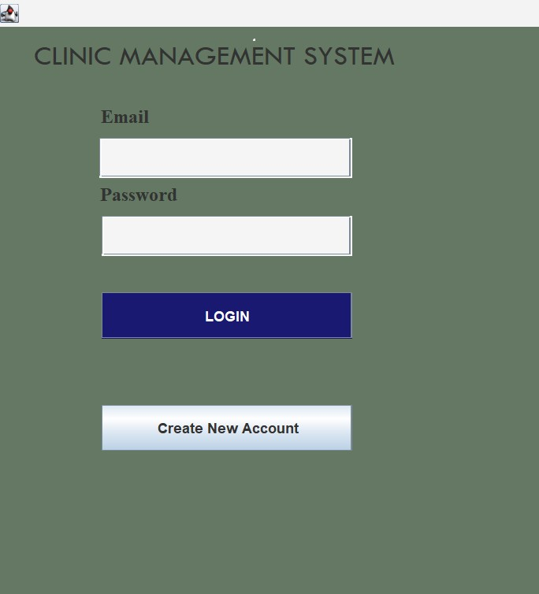
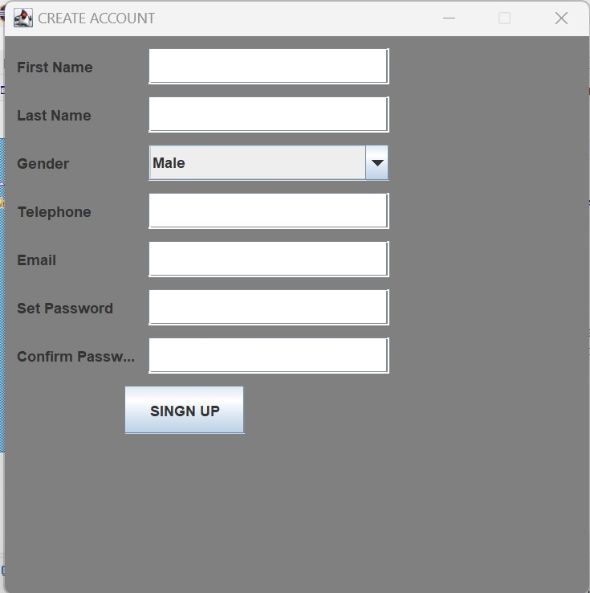
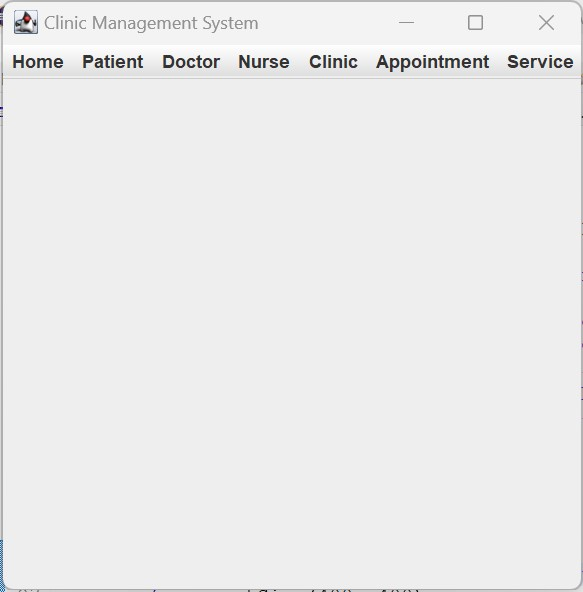
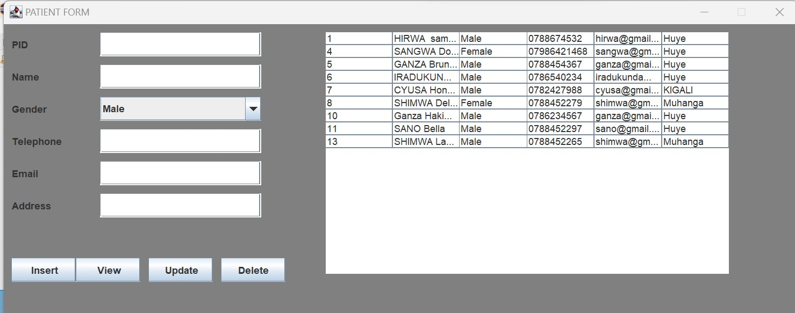
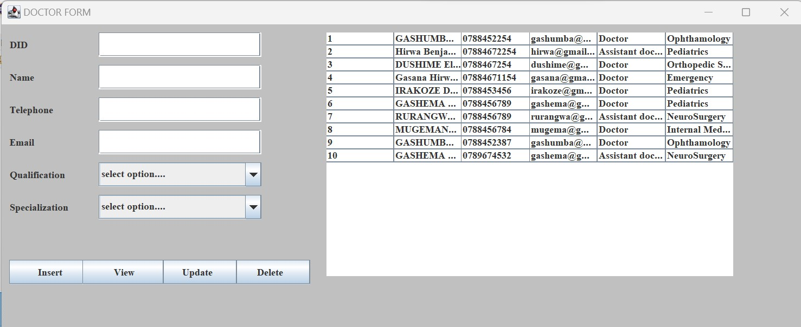
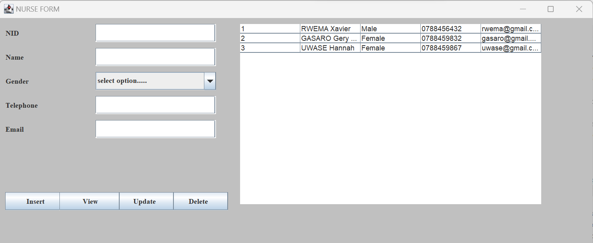
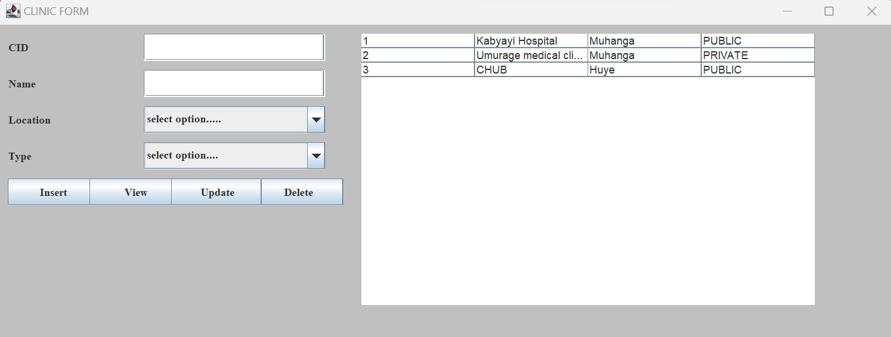
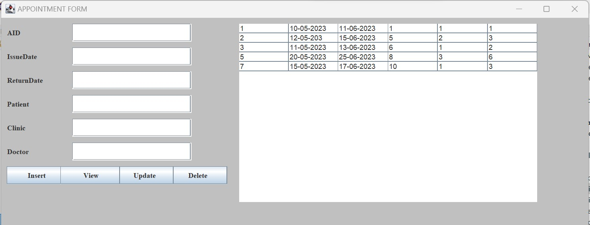
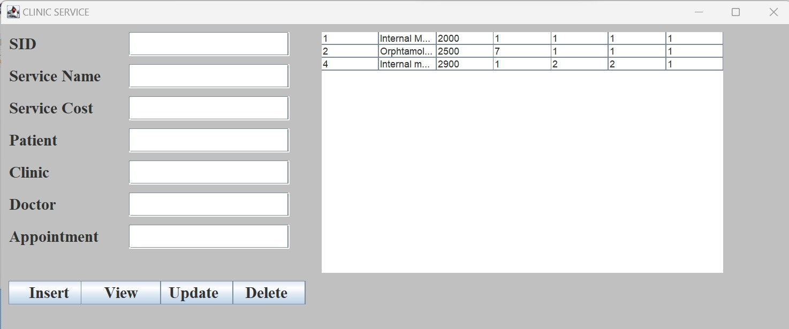

In database of this system be ready to look at operation used on some table in this database so that you can know what to and what not to do on given entity. Note that to develop this system database there are some material which were used so that we can get on final output of system as was described in in your system analysis of how your system can work.
fname: The columns which are represents first name and last name of user.
lname: The column which are represents telephone number of user.
gender: The column which are represents or store gender of user like female and male.
phone: The column which are represents telephone number
Email: The column which are represents your email registered.
Setpassword: The column which are represents password set.
Comfirmpassword: The column which are represents password confirm.
Pid This can be difined as Patient id it is auto increment
Name : is the name of patient
Gender :Gender of patient
Telephone :phone number patient
Email :Email of patient
Address :Location of the patient
Did This can be difined as Doctor id it is auto increment
Name : is the name of doctor
Telephone :phone number doctor
Email :Email of doctor
Qualification :what a doctor is ability of a doctor.
Specialisation :what is doctor specified to do.
Nid This can be difined as Nurse id it is auto increment
Name : is the name of Nurse
Gender :Gender of Nurse
Telephone :phone number Nurse
Email :Email of Nurse
Cid This can be difined as clinic id it is auto increment
Name : is the name of clinic.
Location :is the location of clinic.
Type :is the type of clinic can be defined as private and public.
Aid This can be difined as Appointment id it is auto increment
Issuedate : is the Date of appointment.
Returndate :is the Date to return appointment.
Pid :is the foreign key from patient table.
Cid :is the foreign key from clinic table.
Did :is the foreign key from doctor table.
Sid This can be difined as Service id it is auto increment
Service name : is name of service.
Service cost :is cost of service.
Pid :is the foreign key from patient table.
Cid :is the foreign key from clinic table.
Did :is the foreign key from doctor table.
Aid :is the foreign key from Appointment table.
In this chapter I will be describing how powerful general purpose programming language was used to create the analyzed system. Under this chapter I will undergo full detail of how everything will function together with database that have been describe above and how it cope with full analyzed system.
Eclipse IDE: an integrated development environment used in computer programming. It contains a base workspace and an extensible plug-in system for customizing the environment. It is the second-most-popular IDE for Java development, and, until 2016, was the most popular.
JAR stands for Java Archive. It's a file format based on the popular ZIP file format and is used for aggregating many files into one. Although JAR can be used as a general archiving tool, the primary motivation for its development was so that Java applets and their requisite components.
So let look together how the system will function one by one from the beginning up to the end.
For a Clinic Management System implemented in Java, the login functionality typically involves creating a user interface for users to enter their credentials (email and password) and click on Login Button to confirm your credentials according to your information you have been assigned in ACCOUNT TABLE in database. If you have to create account you can go on create new account button in order to create new account
To create a new account you typically need to implement functionality to collect user information, validate input, and then store the information Account table in the database. Create new account method to inserts the user information into the database. You would need to implement methods for getting user input, validating input.
Creating a menu form for a clinic management system involves designing a user interface (UI) that allows users to navigate through different functionalities of the system. Such as home, patient, doctor, nurse, clinic, appointment, service: If you want to go on patient form you can click on patient, all form you want to go you may have to click on it.
This Patient form contain all information you want on doctor and activity you want to do on patient. This help user to identify what you want. You can insert patient details Pid, Name, Gender, Telephone, Email, Address and table list if all data you insert can be displayed. You may have view button to display all information you may have to insert, update button to update information you want and delete button information you want.
This Doctor form contain all information you want on doctor and activity you want to do on doctor This help user to identify what you want. You can insert Doctor details Did, Name, Telephone, Email, Qualification you can choose qualification you want, Specialisation you can choose specialization you want and table list if all data you insert can be displayed. You may have view button to display all information you may have to insert, update button to update information you want and delete button information you want.
This Nurse form contain all information you want on nurse and activity you want to do on nurse This help user to identify what you want. You can insert nurse details Nid, Name, Gender you can choose gender you want, Telephone, Email and table list if all data you insert can be displayed. You may have view button to display all information you may have to insert, update button to update information you want and delete button information you want.
This Clinic form contain all information you want on clinic and activity you want to do on clinic form. This help user to identify what you want. You can insert nurse details Cid, Name, Location you can choose location you want, Type you want to choose type of clinic you want according to the what you want and table list if all data you insert can be displayed. You may have view button to display all information you may have to insert, update button to update information you want and delete button information you want.
This Appointment form contain all information you want on appointment and activity you want to do on appointment this form have relationship with the patient form for Pid, relationship with the doctor form for Did, relationship with the clinic form for Cid where you can write pid, cid, did you may inserted on database. This help user to identify what you want. You can insert patient details Aid, Issuedate, Returndate, Patient, Clinic, Doctor, and table list if all data you insert can be displayed. You may have view button to display all information you may have to insert, update button to update information you want and delete button information you want.
This Service form contain all information you want on service and activity you want to do on service this form have relationship with the patient form for Pid, relationship with the doctor form for Did, relationship with the clinic form for Cid ,relationship with appointment form for Aid where you can write Pid, Cid, Did, Aid you may inserted on database.
